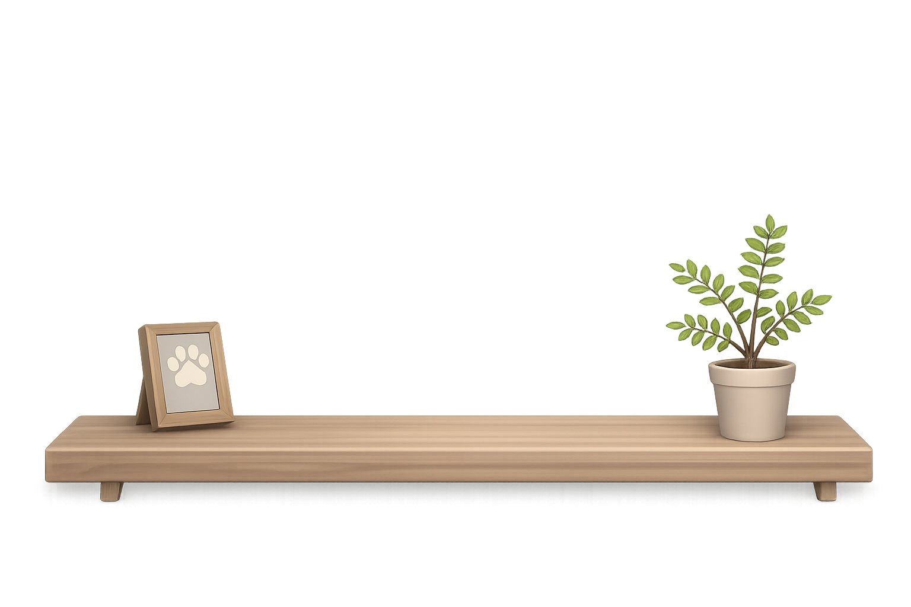
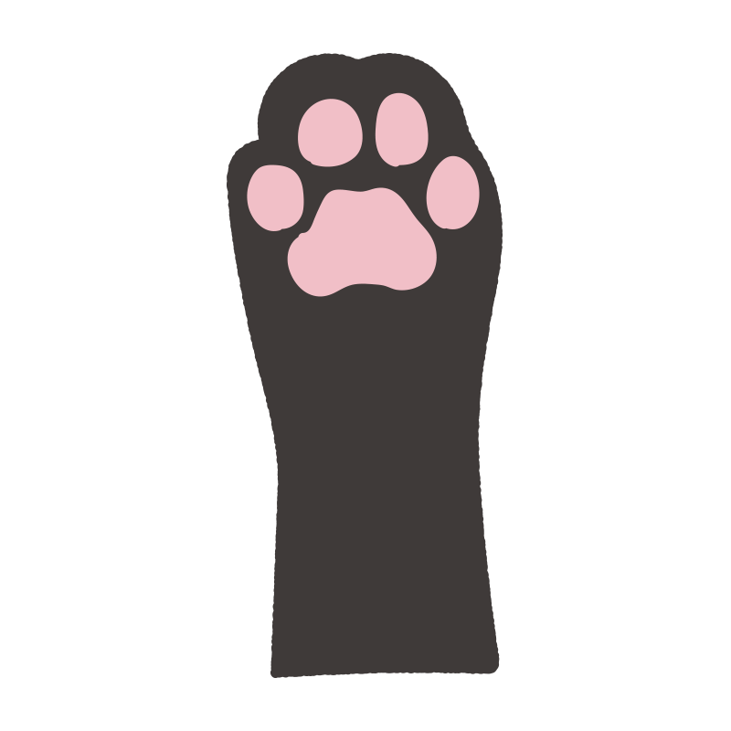
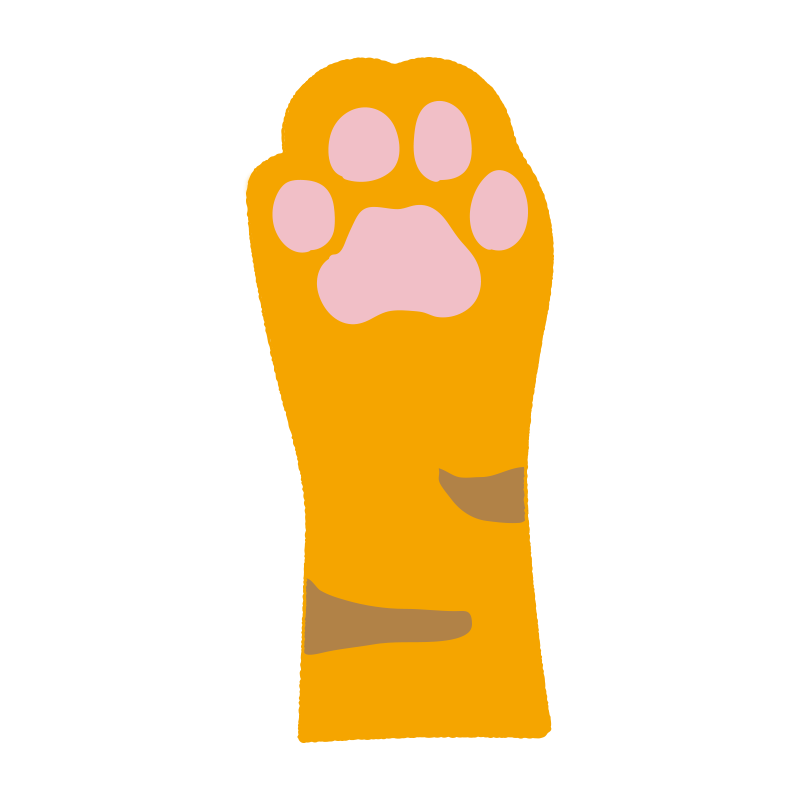
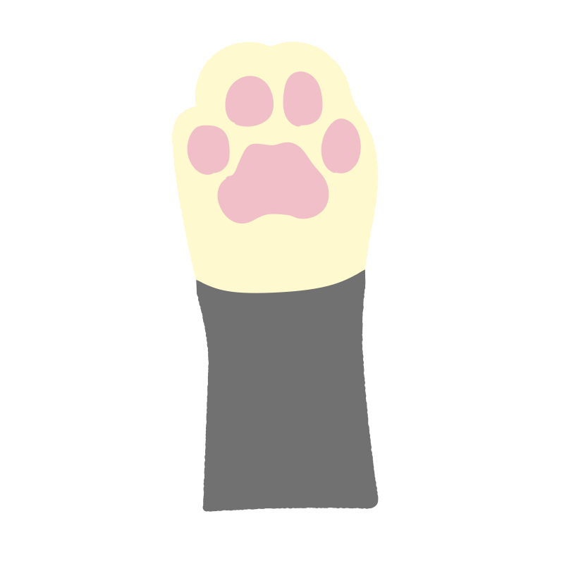
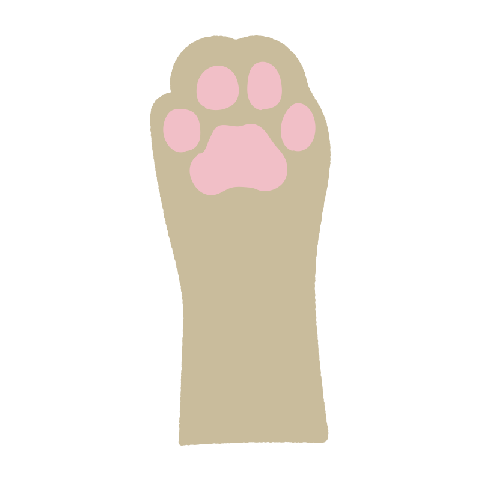

ネコローディング
Neko Loading
PLAY
遊び方
0
/ 20 ステージクリア
ステージ選択
ステージ 1

同じ色の肉球をタッチ！




CLEAR!
★
★
★
ミス
0
次のステージ
ステージ選択
FAILED
にゃー
リトライ
ステージ選択
遊び方
基本ルール
画面下に4本の猫の手ボタンが表示される
画面上の読み込み中のグルグルに向かって猫の手が伸びてくる
伸びてくる猫の手と同じ種類のボタンをタップ
正しくタップすると猫の手が引っ込む
間違った猫の手をタップするとミス
猫の手が読み込み中のグルグルに触れるとロードが4%減る
100%まで守り切ればステージクリア
星評価
★★★ ミス0回
★★ ミス1～2回
★ ミス3～5回
コツ
猫の手の模様をよく見て判別する
焦らず正確にタップする
ステージが進むと出現速度が上がる
ゲームスタート